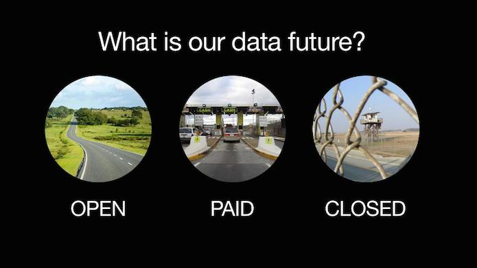
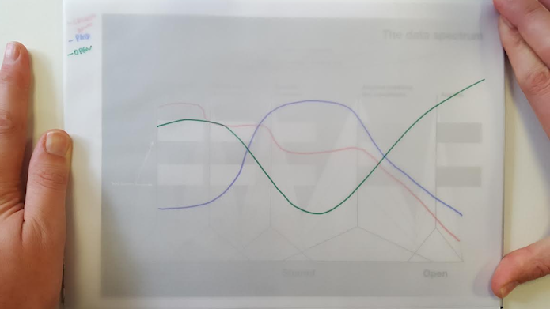

Comment: What would an open data future look like?
This is the fourth in a blog series discussing how the future affects data infrastructure. The first describes why we are considering three potential data futures, the second explores the locked-down future, and the third explores the paid future

By Peter Wells and Anna Scott
What will our ‘data future’ look like? Well, there are three possible directions in which it could turn: a locked-down future where data collection and use is tightly restricted, a paid future where data is licensed for money, and an open future where data is made as open as possible.
At the Open Data Institute, we like to describe data as roads: roads help us navigate to a location, data helps us navigate to a decision. While the locked-down future has missing roads and locked gates, and the paid future is dominated by toll booths, the open future has roads that we can all use. Both the paid and locked-down futures are more limited in their use of data than the open future. Where they create less value and only some can benefit, the open future creates a virtuous circle from which everyone can benefit.
In the open future governments, businesses and civil society use and publish as much data openly – for anyone to access, use and share – as possible. Open data will be maximised, while privacy is respected.
There will be transparency in what personal data is collected, how it is used and shared: both privacy and openness create trust that is essential when using personal data. This transparency helps people make better choices. There is free access to personal data, under careful conditions, for approved researchers and they openly publish their findings.
We choose openness for economic, environmental and social good
The choices we make with data are extremely important. The open future will only emerge as governments, businesses and people embrace it and create an environment that encourages the open future to flourish.
In the open future, businesses see that by being open they can grow their business, build greater trust with their customers and retain a competitive edge in the rapidly changing world of the 21st Century. Charities and social enterprises see how it helps their missions. Organisations of all kinds understand that they can open up data and work together to solve common problems while still being competitive. Whether it be in the banking sector, the agriculture sector or anywhere else, businesses support open innovation, are transparent about their operations, and supply open data that everyone can benefit from.
People recognise the economic, environmental and social benefits of data being used by anyone for any purpose. They are told how their data will be used and anyone can verify that what they are told is what happens. People have the literacy to do fun things with data and make good choices about which services they choose to trust with their personal data.
Meanwhile, governments recognise that the open future helps meet Sustainable Development Goals and generates economic growth that we can all benefit from. The extra revenue allows governments to fund the maintenance of their countries' data infrastructure in areas where the data market fails or where they want to create certain policy outcomes. The data infrastructure is as reliable as necessary and as open as possible. It provides a solid basis for services to be delivered and open innovation to happen.
To some extent this open future for data is an evolution of openness in society: open government, open web, open source, open standards, open innovation and open culture. Within each of these movements, some people choose paid and closed models, while others choose openness. We believe maximising openness is the best choice because it brings the biggest benefits across society.
The open future and the Data Spectrum

In the picture above the red line is the locked-down future, the blue line is the paid future and the green line shows the open future on the Data Spectrum, running from closed to shared to open data.
In the open future, we can expect the closed part of the spectrum to contain more data than in the paid future. In the paid future, the lure of money leads to us sharing data that should have been kept private or could have been opened to benefit all of society. People feel that everything can be shared if the price is right and sacrifice privacy for cash.
In the open future, we have a better understanding of what should be closed and what should be open. The 'shared' layer is significantly smaller. It is reduced to those occasions when we share data for service needs – such as through open APIs – or for research.
The rest of the data is open, for anyone to access, use and share.
Maximising collaboration and efficiency
In the open future, funding and oversight from government and regulators help make data infrastructure reliable and open.
Government might intervene to make data open to maximise economic value to society, for example to ensure transparency about the performance of a sector, because the resulting data assets are widely valuable or to create a more competitive marketplace. Government might also intervene and keep data closed to protect privacy.
Some of our data infrastructure will have been built by organisations working together to solve common problems. Collaborative maintenance models – like that used by OpenStreetMap – are likely to exist in great numbers, and be used for other core data assets such as addresses. Responsibilities, costs and benefits are shared in these parts of the infrastructure. The organisations work in the open and the data produced by their collaboration is made open. Their culture has changed to be one of openness, and this matches what their communities expect.
In other parts of our data infrastructure, data will be shared between organisations.
Data intermediaries, or aggregators, will add value by combining datasets or offering additional services. They are likely to use freemium models, with an open data feed that anyone can use and a premium feed for customers who need high-volume usage or early access to data.
There will also be organisations that share personal data, facilitated by institutions of trust who certify sharing according to agreed principles and open standards. Both the organisations and institutions of trust will be transparent in how they make decisions. Where it does not damage privacy, they will publish aggregated data about the personal data that is being shared.
Releasing aggregated data for the benefit of everyone and being transparent about how and when data is shared can increase innovation, improve trust and help make consent meaningful. There will be the necessary expertise and data skills in the organisations that deliver services, maintain and regulate data as well as increased data literacy amongst the people who choose whether or not to use those services.
The single-minded focus on data sharing – whether it be personal data or other data assets – that we saw in the paid future is like building a road network that consists mainly of toll roads. In the open future, data is like the road infrastructure that we have now: most roads, no matter who maintains them, are free for everyone to use.
This will not be easy. Realising our open future will require us to build and maintain a data infrastructure that is as reliable and open as possible, and that maximises value by bringing together privacy and openness. By doing this we support, transparency and accountability; we grow our economies and we receive better services.
Data helps us build this future but it is humans that choose the direction.
Peter Wells is an Associate and Anna Scott is Writer / Editor at the ODI. Follow @peterkwells and @annadscott on Twitter.
If you have ideas or experience in open data that you'd like to share, pitch us a blog or tweet us at @ODIHQ.